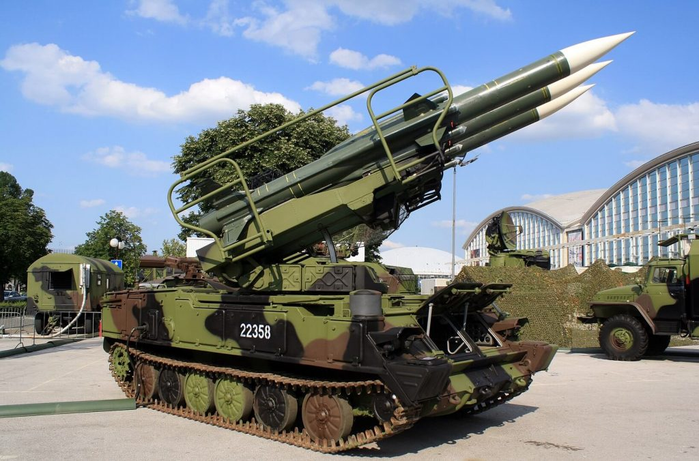
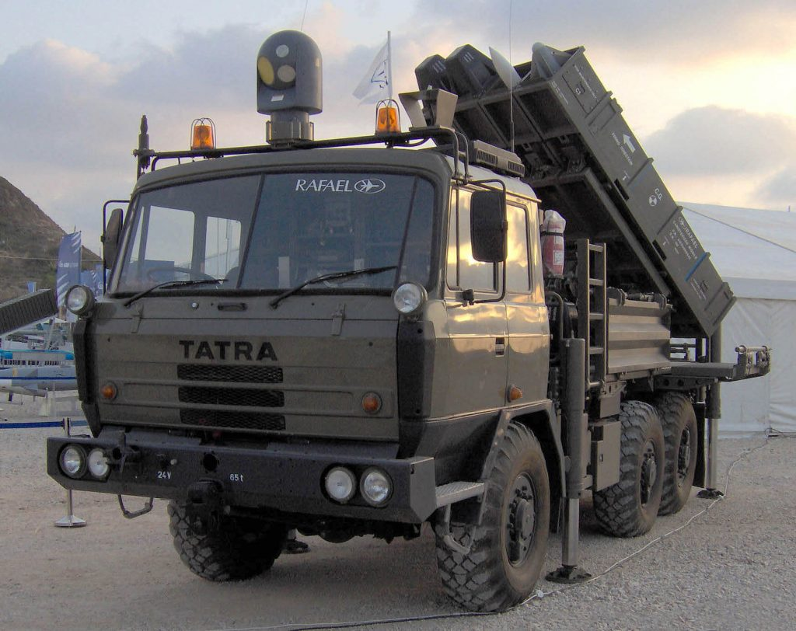

လက်ရှိ ချက်နိုင်ငံရဲ့ လေကြောင်းရန်ကာကွယ်ရေး စနစ်က SA-6 တစ်မျိုးထဲကို အားထား အသုံးပြုနေတာတော့ မဟုတ်ပါဘူး။ Military Balance 2020 ရဲ့ အဆိုအရ လက်ရှိ ချက်နိုင်ငံမှာ လေကြောင်းရန်ကာကွယ်ရေး အတွက် ဆိုဗီယက်ခေတ် လက်ကျန် စနစ်တွေ ဖြစ်တဲ့SA-6, SA-7 နဲ့ SA-13 စံနစ်တွေကို အသုံးပြုနေပါတယ်။
ယခုအခါ ချက်သမ္မတနိုင်ငံ အစိုးရဟာ ယခင် ဆိုဗီယက်ခေတ်က လက်ကျန် လက်နက်တွေ နေရာမှာ ပိုမို ခေတ်မှီပြီး အစွမ်းထက်တဲ့ လက်နက်စနစ်တွေနဲ့ အစားထိုးဖို့ ကြိုးစားလျှက် ရှိပါတယ်။ နောက်ပြီး ဒီလို ပြောင်းလဲ အစားထိုးခြင်း အားဖြင့်လဲ ဒီလက်နက်တွေ ထိန်းသိမ်းပြုပြင်ဖို့နဲ့ အပိုပစ္စည်းတွေ အတွက် ရုရှားနိုင်ငံအပေါ် မှီခိုအားထား နေရခြင်းကလဲ လျှော့နည်းသွားစေမှာ ဖြစ်လို့ပါ။
လက်ရှီ ခေတ်မှီပြုပြင်ပြောင်လဲရေးအတွက် ဦးစားပေး အဆင့် သတ်မှတ်ထားတဲ့ စစ်လက်နက် တွေကတော့ သံချပ်ကာ တိုက်ခိုက်ရေး ယာဉ်တွေ၊ ယာဉ်တင် ဟောင်ဝစ်ဇာ အမြှောက်ကြီးတွေ၊ ဘက်စုံသုံး ရဟတ်ယာဉ်တွေ၊ သယ်ယူပို့ဆောင်ရေး လေယာဉ်တွေ၊ တာတိုပစ် လေကြောင်းရန် ကာကွယ်ရေး စနစ်တွေနဲ့ လူမဲ့ဒရုန် UAVs (Unmanned Aerial Vehicles) တွေပဲ ဖြစ်ကြပါတယ်။

SA-7 ဒုံးကျည် အမျိုးအစား မူကွဲ ၄ မျိုး ထုတ်လုပ်ခဲ့ပါတယ်။ ချက်နိုင်ငံ လေကြောင်းရန် ကာကွယ်ရေး တပ်တွေမှာ တပ်ဆင်ထားတဲ့ အမျိုးအစားမှာ အကွားအဝေး ကီလိုမီတာ ၂၃ ကီလိုမီတာ အထိ ပစ်ခတ်နိုင်တဲ့ ဒုံးကျည်တွေ တပ်ဆင်ထားပါတယ်။ ဒုံးကျည်ရဲ့ ထိပ်ဖူးက ပေါက်ကွဲအားပြင်းယမ်း (High Explosive) ၅၉ ကီလိုဂရမ်တောင်မှ ထည့်သွင်းထားပါတယ်။
ဒီစနစ်ကို အစားထိုးဖို့ ကြိုးစားနေတဲ့ အစ္စရေး နိုင်ငံထုတ် စပိုင်ဒါ လေကြောင်းရန် ကာကွယ်ရေး စနစ်ကို အစ္စရေး လက်နက် ကုမ္ပဏီကြီး တစ်ခုဖြစ်တဲ့ ရာဖာယဲလ် (Rafael) ကုမ္ပဏီက တီထွင်ထုတ်လုပ်ထားခြင်း ဖြစ်ပါတယ်။ ဒီစနစ်မှာ အလွန် အစွမ်းထက်ပြီး တိုက်ပွဲတွေမှာ ရန်သူလေယာဉ်တွေကို ပစ်ချနိုင်ခဲ့တဲ့ ဝေဟင်မှ ဝေဟင်ပစ် ဒုံးကျည်တွေကို တပ်ဆင်ထားပါတယ်။ ဒီမနစ်မှာ တပ်ဆင်တဲ့ ဒုံးကျည်တွေဟာ မူလက အစ္စရေး လေတပ် တိုက်ခိုက်ရေး လေယာဉ်တွေမှာ တပ်ဆင်ထားတဲ့ ဝေဟင်မှ ဝေဟင်ပစ် ဒုံးကျည်တွေ ဖြစ်ကြပါတယ်။ ဒီဒုံးကျည်တွေကို အစ္စရေး နိုင်ငံတွင်းမှာပဲ ထုတ်လုပ်တာဖြစ်ပြီး တိုက်ပွဲပေါင်းများစွာမှာ အစွမ်းပြ နိုင်ခဲ့ပြီး ဖြစ်ပါတယ်။ ဒီ ဝေဟင်မှ ဝေဟင်ပစ် ဒုံးကျည်တွေကို မြေပြင်မှ ဝေဟင်ပစ် စံနစ်မှာ တပ်ဆင်နိုင်အောင် အစ္စရေး အင်ဂျင်နီယာတွေက ပြုပြင်ပြီး ထုတ်လုပ်ထားတာ ဖြစ်ပါတယ်။
ဒီ Spyder Air Defence System မှာ ပါဝင်တဲ့ လေယာဉ် ပစ် ဒုံးကျည်စနစ်တွေမှာ Python-5 air to air missile အမျိုးအစား အနီအောက်ရောင်ချည်ရှာ ပဲ့ထိန်းဒုံးကျည်တွေနဲ့ I-Derby active radar beyond visual range အမျိုးအစား ရေဒါလမ်းညွှန် ဒုံးကျည် စံနစ်တွေကို တပ်ဆင် အသုံးပြုနိုင်ပါတယ်။ ဒါ့အပြင် အလွန်ဝေးတဲ့ ပစ်မှတ်တွေကို ပစ်ခတ်ဖို့ I-Derby ER long-range missiles ဒုံးကျည်တွေကိုလဲ တပ်ဆင် အသုံးပြုလို့ ရပါတယ်။

ဒီ Spyder လေကြောင်းရန် ကာကွယ်ရေး စနစ်တွေကို ဒေသတွင်းမှာ အန္ဒိယ တပ်မတော်၊ ဖိလစ်ပိုင် တပ်မတော်၊ စင်ကာပူ တပ်မတော်နဲ့ ဗီယက်နမ် တပ်မတော်တို့က အသုံးပြုလျက် ရှိကြောင်းပါ ခင်ဗျာ။
Reference: Czech Republic negotiates acquisition of Israeli Spyder air defense missile systems